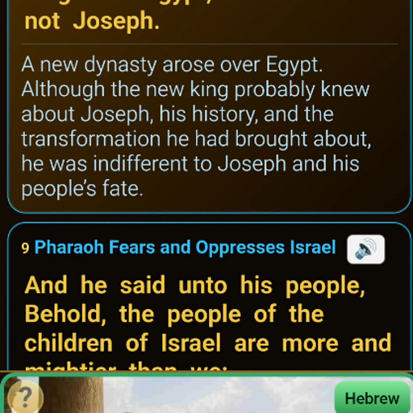
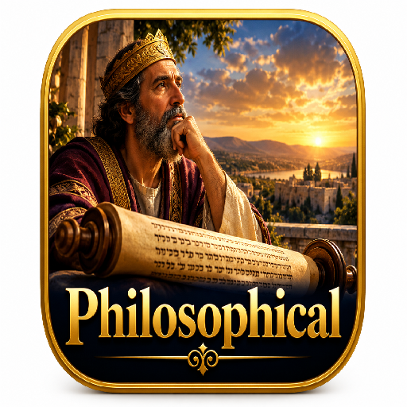

התנ״ך
THE BIBLE
קריאת התנ״ך בעברית ובאנגלית, עם שמע, פסוקים וכלי לימוד.
Read the Bible in Hebrew and English, with audio, verses and study tools.
לחץ לפתיחה או גלגל לאפליקציותCLICK TO OPEN OR SCROLL TO APPS↓
סיפורי התנ״ך
גם לילדים + טריוויה
BIBLE STORIES · FOR CHILDREN TOO + TRIVIA
סיפורי התנ״ך בתמונות, עם הסברים לילדים ולמבוגרים, קריינות ומשחקי ידע.
Illustrated Bible stories with explanations for children and adults, audio, and quizzes.
תנ״ך היסטורי
HISTORICAL BIBLE
מסע בין אירועי התנ״ך, ציר הזמן, ממצאים ארכאולוגיים ורקע היסטורי ותרבותי.
Explore biblical events through timelines, archaeology, and historical and cultural context.

תנ״ך פילוסופי
PHILOSOPHICAL BIBLE
רעיונות ושאלות פילוסופיות מתוך פסוקי התנ״ך, עם הסברים ותמונות.
Explore philosophical ideas and questions from Bible verses, with explanations and illustrations.
תנ״ך גיאוגרפי
GEOGRAPHICAL BIBLE
מסע בין מקומות התנ״ך, נופים, נהרות ודרכים, עם פסוקים, הסברים ותמונות.
Explore biblical places, landscapes, rivers and routes through verses, explanations and illustrations.
תנ״ך בתמונות
BIBLE IN PICTURES
מסע חזותי בין סיפורי המקרא באמצעות תמונות וקריינות.
Explore Bible stories through pictures and narration.

תנ״ך לפי משרד החינוך
BIBLE BY THE ISRAELI MINISTRY OF EDUCATION
לימוד התנ״ך לפי כיתות, עם בחירת ספרים ופרקים, קריאה ותרגול בעברית ובאנגלית.
Study the Tanakh by grade, choose books and chapters, and read and practice in Hebrew and English.